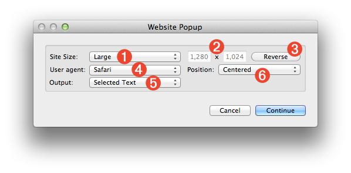
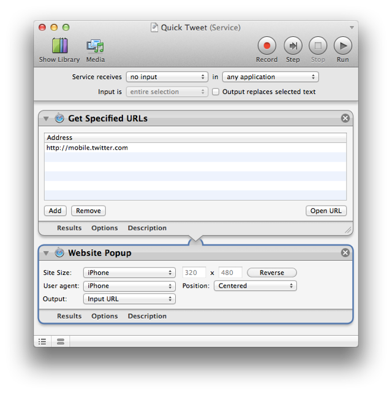
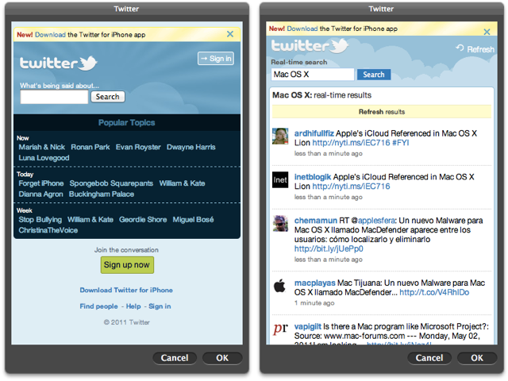
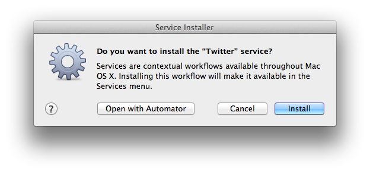
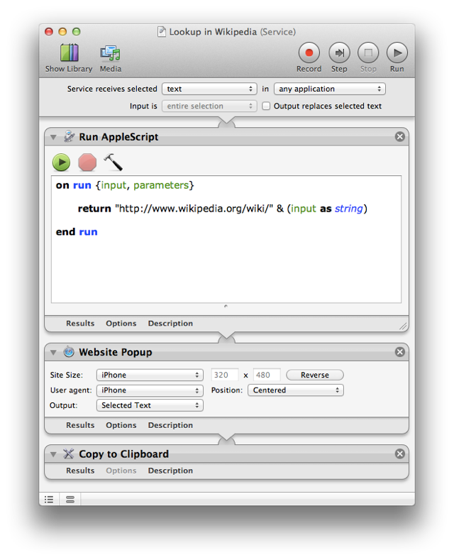
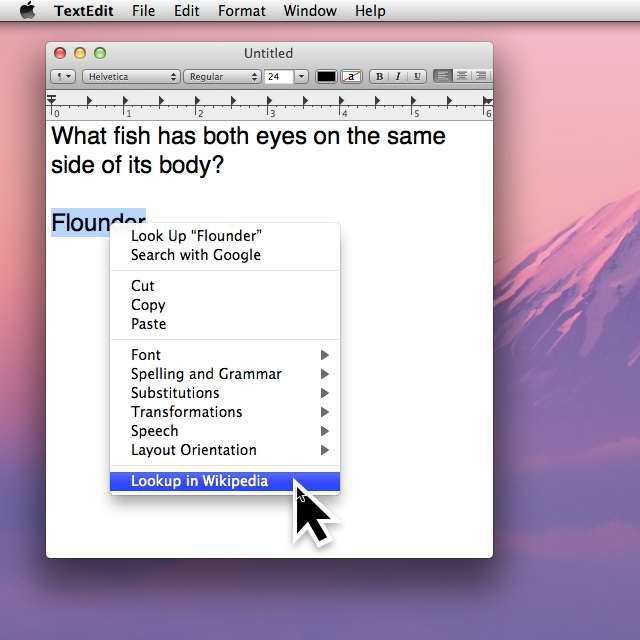
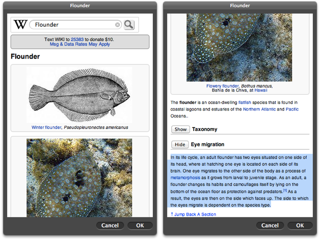
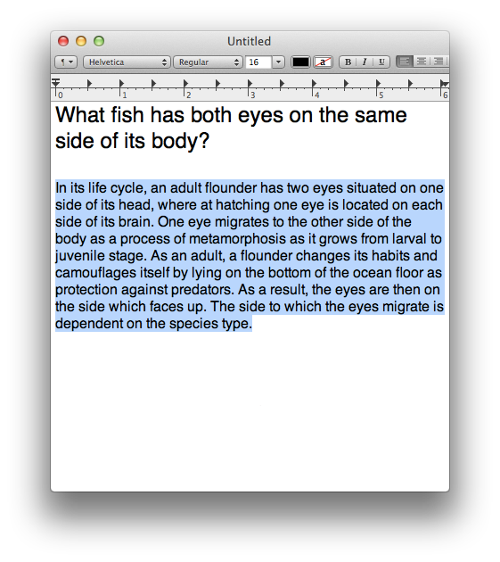
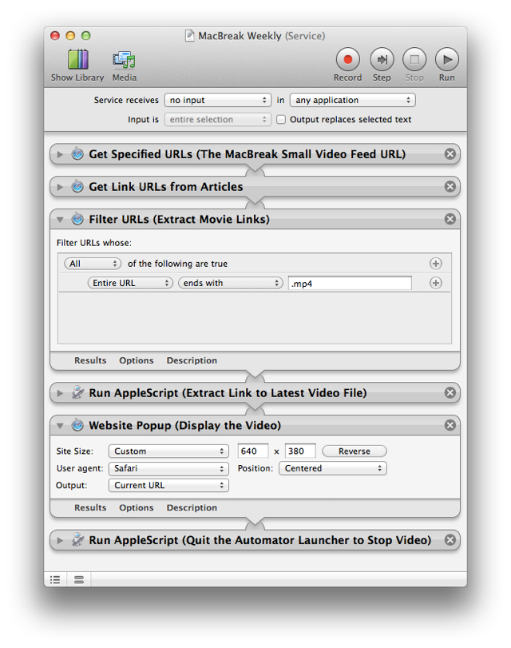
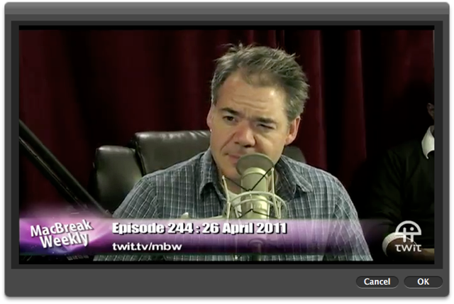

Website Popup
More and more, services and functionality are moving to the Cloud.
Accessing internet-hosted server-based content without the hassle and overhead of using a browser can prove to be invaluable in providing simple, quick, and elegant workflow soltuions. The Website Popup action displays specified HTML or web-based content in a floating HUD-like palette that can provide fast access to important content and then quicly get out of the way.
The Action Interface
The following desccribes the various controls and parameters used in the action interface.
- Webview Size Presets - Select a preset for determining the size of the floating palette: Large (1280w x 1024h), Medium (1024w x 768h), iPhone (320 x 480), iPhone Landscape (480 x 320), iPad (960 x 1024), iPad Landscape (1024 x 960), or Custom.
- Window Dimensions - If Custom is selected from the Webview Size Presets menu (1) these two text input fields become enabled, allowing you to enter any values for the width and height of the palette display.
- Reverse Dimensions - Click this button to swap the values in the width and height input fields (2).

- User Agent - Many websites may display differently, depending upon the device they are viewed on. For example, the mobile version of a website may be automatically displayed when viewed on an iPhone rather than on a Mac. The webview can mimic one of three devices by setting the user agent options: as Safari on the Mac; as the iPhone; or as the iPad.
- Display Position - You can choose where the floating palette will appear by selecting either: Centered on the screen; or At Mouse Pointer.
- Action Output - The Website Popup action can return one of three types of data to the workflow: the currently Selected Text in the webview; the Input URL of the first webpage displayed; or the Current URL displaying in the webview.
NOTE: the floating palette can be dismissed, when frontmost, by pressing the Escape key.
NOTE: The HTML-5 LocalStorage object is not currently supported.
Example Workflows
Here are a few examples of how this action can be used in the creation of a Mac OS X services:
Quick Tweet
The first example is a simple workflow that displays the website of a URL passed to the Website Popup action. It is saved as a system service, available at anytime from within any application, that displays the mobile Twitter website.
This service takes no input and comprised of two actions: one for passing a specific URL to the next action, and the Website Popup action set to display in the center of the screen as an iPhone. Note the specified URL of http://mobile.twitter.com:

When the service is selected from the Application > Services menu (or by typing an assigned keystroke), the mobile Twitter website is displayed in a floating iPhone-sized palette:

The Twitter Mobile login window (left), and the same window displaying search results (right).
 TRY IT YOURSELF! Download a zip archive of the service workflow. To install, double-click the workflow file, and then click the Install button in the forthcoming dialog:
TRY IT YOURSELF! Download a zip archive of the service workflow. To install, double-click the workflow file, and then click the Install button in the forthcoming dialog:

Once installed, the service will be available from the Application > Services menu.Wikipedia Lookup
This example service workflow displays the Wikipedia search results for the currently selected text. As with the previous example, the Wikipedia content is displayed as viewed on an iPhone.

The Wikipedia search URL is contructed by appending the currently selected text to the Wikipedia URL in the first action. The URL is then displayed in the website popup palette. Note that any text selected in the floating palette will be placed on the clipboard for easy pasting into the front document once the OK button is pressed on the palette.
(Below) A term is selected in a document and the service is summoned by displaying the application's contextual menu (Control-Click).

(Left) The wiki entry for the search term is displayed. (Right) Content from the page is selected. The selection will be placed on the clipboard when the OK button is pressed.

The clipboard content has been pasted into the document:

 TRY IT YOURSELF! Download a zip archive of the service workflow. To install, double-click the workflow file and click the Install button in the forthcoming dialog. Once installed, the service will be available from the Application > Services menu.
TRY IT YOURSELF! Download a zip archive of the service workflow. To install, double-click the workflow file and click the Install button in the forthcoming dialog. Once installed, the service will be available from the Application > Services menu.
Watch Latest Macbreak Weekly Episode
Here's a convenient way to watch the latest Macbreakly Weekly podcast! This service workflow gets the URL of the current episode from the Macbreak Weekly small video RSS feed and then displays the video in a small custom-sized floating window.

NOTE: If you want to dismiss the palette, click the OK button at the bottom right of the palette. Clicking the Cancel button, or typing the Escape key, may not stop the video playback.

 TRY IT YOURSELF! Download a zip archive of the service workflow. To install, double-click the workflow file and click the Install button in the forthcoming dialog. Once installed, the service will be available from the Application > Services menu.
TRY IT YOURSELF! Download a zip archive of the service workflow. To install, double-click the workflow file and click the Install button in the forthcoming dialog. Once installed, the service will be available from the Application > Services menu.